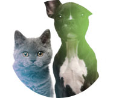

S.O.S Pet é um Projeto sem fins lucrativos fundado em 2016 com o intuito de espalhar a conscientização do quanto é importante preservar a vida animal. O número de animais abandonados (cachorro, gato) já está em mais de 30 milhões, sendo que entre 20 milhões são cachorros e 10 milhões são gatos.
Continue Lendo